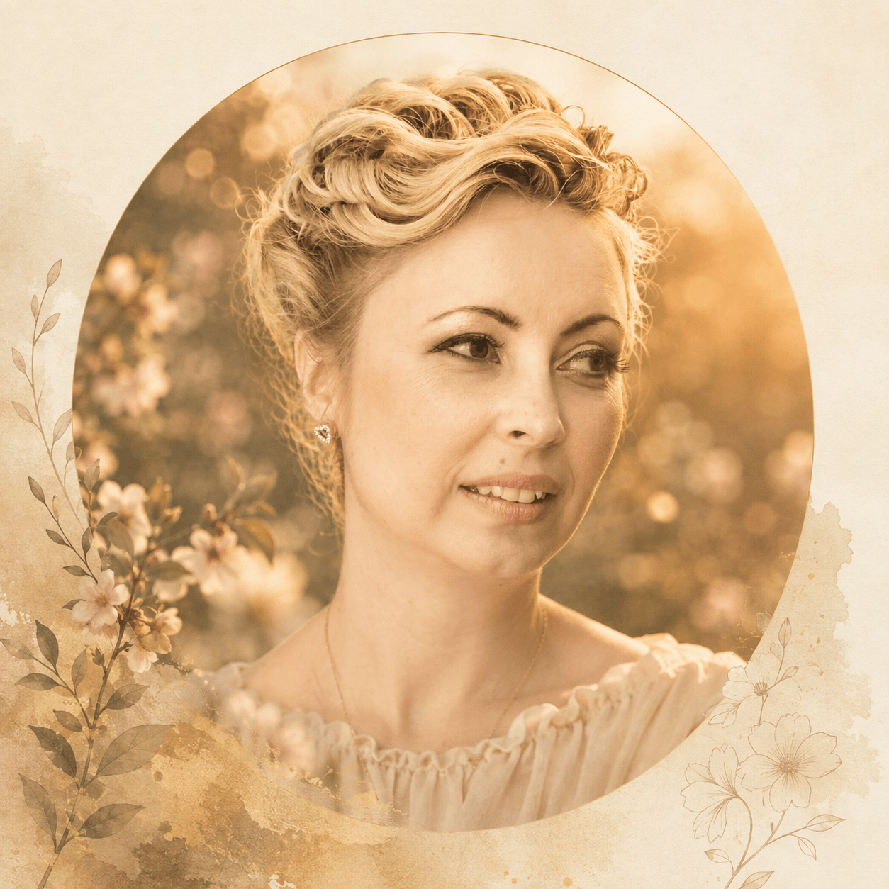

Let's Stay in Bloom
May this music garden always have a place to welcome you.

Dear friend,
If you've wandered this far, you've already become part of the story.
Every song begins as a quiet thought before it finds its purpose. Once it is shared, it no longer belongs only to me. It becomes part of the memories, dreams, and moments of everyone who listens.
If a melody has stayed with you, comforted you, made you smile, or simply kept you company for a while, then it has already become more than just a song.
I'd love to know where it found you.
Whether you'd like to share a thought, tell me about a memory these songs awakened, or simply say hello, my inbox is always open.
Warmly,
Elena
Songwriter & Creator of Mugurella Garden
✉ mugurella@gmail.comSongs are only seeds. They bloom when they find a heart.
Follow Mugurella
Join the journey beyond the songs and be the first to discover new releases, stories, and little blooms from the garden.